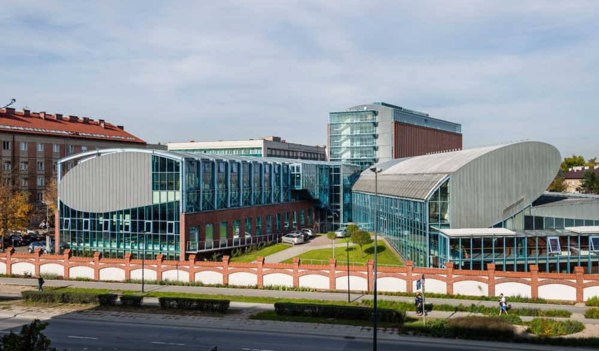

Kierunki studiów Uniwersytet Ekonomiczny w Krakowie
Uczelnia powstała 28 maja 1925 roku jako państwowe Wyższe Studium Handlowe. W 1937 roku została przekształcona w Akademię Handlową, otrzymując tym samym uprawnienia szkoły akademickiej. Po wybuchu wojny Akademia, podobnie jak inne polskie uczelnie, została zamknięta, zaś jej profesorowie – razem z wykładowcami Uniwersytetu Jagiellońskiego i Akademii Górniczej – aresztowani i wywiezieni do obozu koncentracyjnego.

Applied Informatics The main objective of this study program is to deliver IT knowledge and specific skills needed for effective information systems management in a fast changing world. This field of study focuses on theoretical principles of computer science, algorithms, computer programming, database systems and operating systems. The program has also been prepared to provide students with knowledge about micro and macroeconomics, management, business, corporate finance & other related issues. During the lectures students will be introduced to theoretical and practical aspects of IT projects management, implementation and teamwork. One of the essential factors for foreign students is that all courses are conducted in English, by both local
and external professors.
Kierunek Administracja Kierunek łączy aspekty prawne, ekonomiczne i organizacyjno-zarządcze funkcjonowania administracji.
Wyróżnikiem kierunku jest dostarczanie Studentom wiedzy i umiejętności niezbędnych do skutecznego i profesjonalnego wykonywania zadań, jakie zostały postawione przed współczesną administracją zarówno publiczną, jak i prywatną. Dlatego oferta programowa odzwierciedla interdyscyplinarność
zagadnień i złożoność administracji, wymagającej od swych kadr znajomości zagadnień prawnych, finansowych, organizacyjnych itd.
Kierunek Ekonomia Nauczanie na tym kierunku koncentruje się na poznawaniu i zrozumieniu mechanizmów rządzących powstawaniem i przebiegiem zjawisk i procesów ekonomicznych charakterystycznych dla współczesnej gospodarki rynkowej, ujmowanej tak w makro- i mikroskali, poszczególnych rynków, jak i w przekroju krajowym i międzynarodowym. Kierunek stwarza możliwość poznania i zrozumienia różnych aspektów działalności gospodarczej, metod i technik prowadzenia analiz ekonomicznych i finansowych, a także interakcji zachodzących między sferą finansową a sferą realną gospodarki.